Congo

As a result of the Rwandan Genocide, tens of thousands of refugees also moved into Zaire. Some of these were officials and soldiers associated with the genocide and their families, but most were simply swept along in the giant waves of people. The AFDL and Rwandan RPF forces pursued the militants westward and tens of thousands of refugees died of violence, exposure to the elements, and starvation in the jungles of eastern Zaire.
In December 1996, the government of Tanzania announced that the 550,000 Rwandan refugees it was hosting must return and forcibly emptied the camps over the next few months. By the beginning of 1997, the vast majority of refugees who had fled in the aftermath of the Rwandan Genocide has returned. The refugee crisis precipitated by an internal genocide had been ended by a new war.